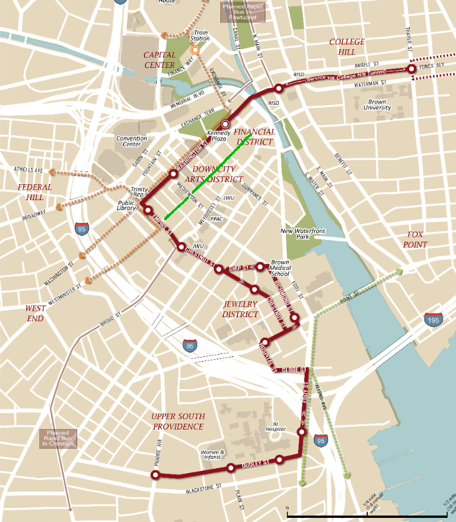

Why isn’t the Core Connector using Westminster with full RoW?
2011-11-06
I love that Providence is pursuing a streetcar. There are really just two things I don’t understand about the Core Connector‘s proposal. I’m going to tackle one in this post.
Why is the entire streetcar route shared with general traffic with no dedicated right-of-way? Truthfully, this isn’t a massive issue except in the core part of Downcity where there is substantial traffic during rush hours along the street car route. But this makes the plan even more perplexing because it’s precisely this portion of the route where an obvious solution for dedicated light rail ROW exists- Westminster Street.

The red route above represents the proposed streetcar line. The green line represents Westminster Street, a narrow, single lane, one-way street that cuts through Downcity and in front of restaurants, boutique shopping, URI, etc. It brings the streetcar line slightly closer to Johnson and Wales and slightly further from the Dunkin Donuts Arena and Rhode Island Convention Center. While there is real automobile traffic, this is almost entirely for two reasons. First, Westminster has substantial on-street metered parking. Second, Westminster is the East->West one-way to counter Weybosset’s West-East.
Of course, the two major Downcity planning projects underway are removing the stress that leads to both of these uses. The Downtown Circulator project is nearly complete, converting Empire and Weybosset to two-way streets. Automobile traffic will almost certainly take the wider and faster Washington and Weybosset Streets, adjacent to Westminster, unless the goal is to find on the street parking. The second project is the Core Connector itself, which provides more options to get into Downcity without a car, hopefully reducing the need for parking. There are also substantial parking capacity that’s underutilized in the many surface lots and parking garages in the area.

As far as I can tell, there is really no need for Westminster to have street traffic. A dedicated ROW will increase the speed and predictability of the streetcar. Additional pedestrian space along Westminster could quickly be used by the cafes and restaurants and street vendors that already are in the area. The only reason I could come up with for not using Westminster as a dedicated right-of-way for the streetcar is the need for a turn in or around Kennedy Plaza. There are so many options for moving between Washington and Westminster that I just can’t buy this as an insurmountable challenge.
I was unable to make it to the three recent public meetings about the proposed route. If I were there, this would certainly be my first question.
-
Sourced from http://www.flickr.com/photos/ranjith-pix/ ↩